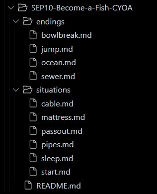

CYOA Project
This project, we created a hyperlinks for different scenerios in a way like a web. We needed to "create your own adventure" and make it into a story on Github. The topic me and my partner did was "become a fish". I found it very fun to test out the creation of a story through files and clicking links.
Our topic that was chosen was preditermined by our interests and me and my partner both chose to do "become a fish". For our topic, we decided to based it on the game "I am fish" and our collaboration was overall positive. First we created a plan so we would know what files to put on our IDE. Then we used to plan to easily create the web and hyperlinks using the files. When deciding which person to work on which files, we decided one person to work on the left side of our plan and the other person would work on the right side of the plan.
Although our collaboration was pretty smooth sailing, we had some confusing with linking files back to another sub-directory. A requirment of our CYOA project was to create a sub-directory so we would practice linking even if the file wasn't in the folder. We had a little struggle on which combination of .. and the folder to use to get to the correct file. After we asked our classmates, we were able tp follow and correctly input it to our other files.
Link to the Project